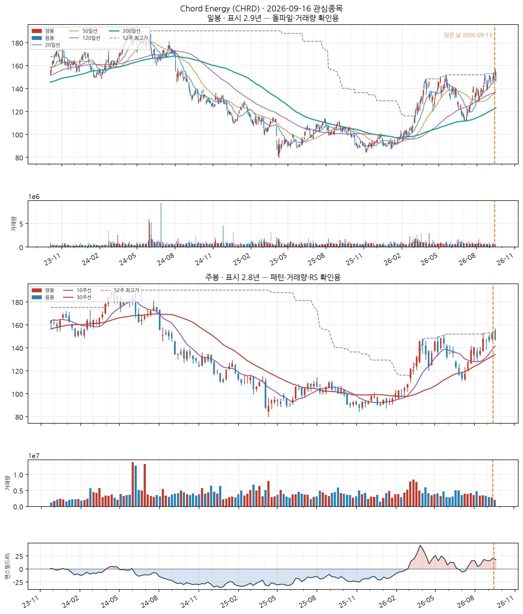
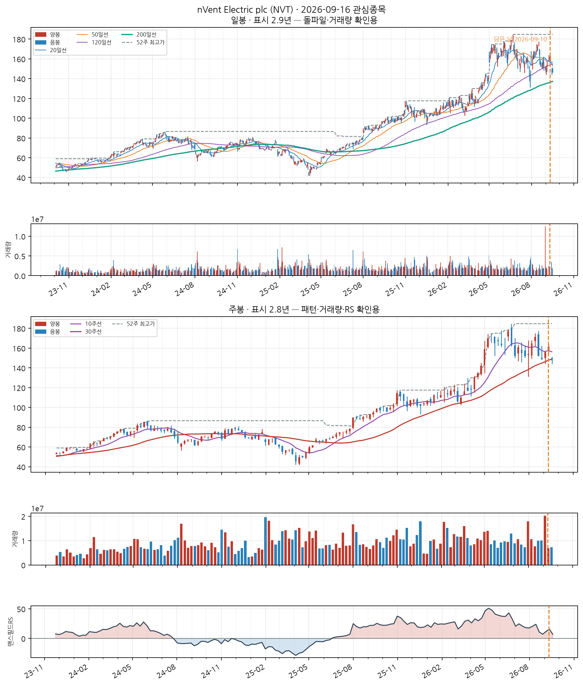
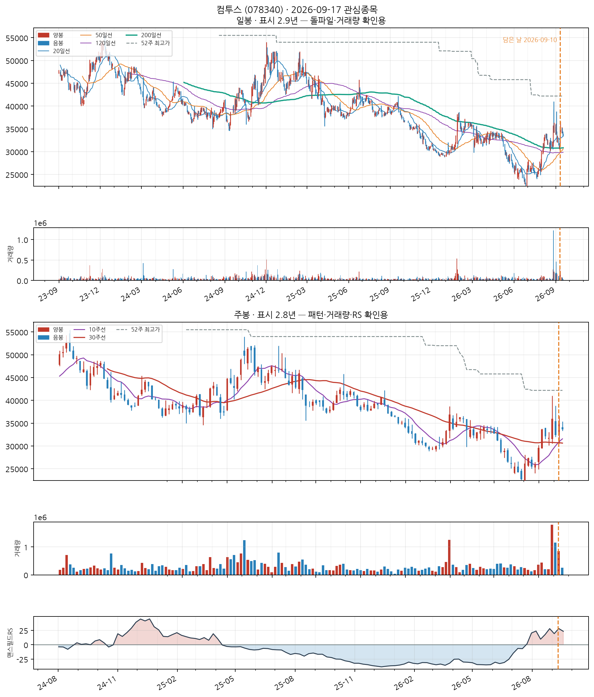
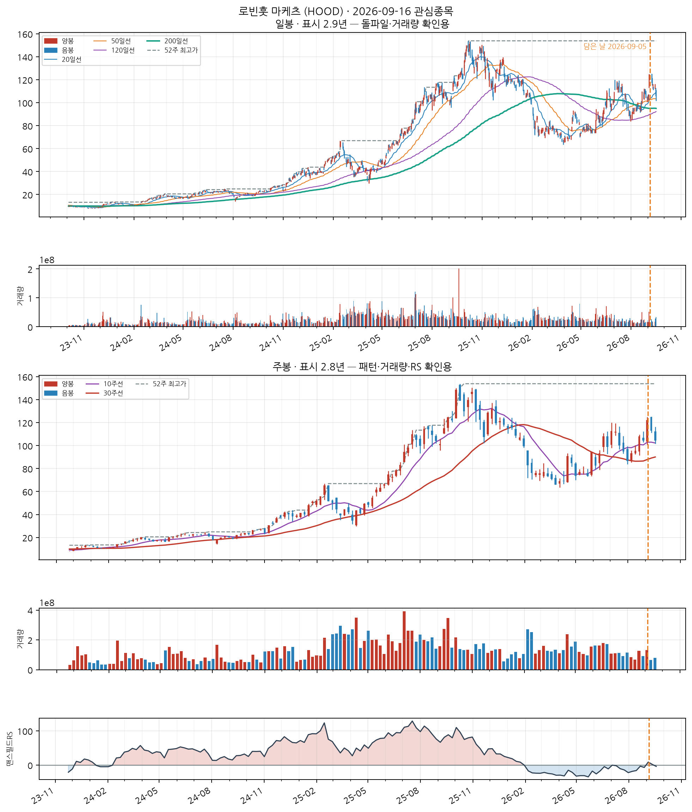
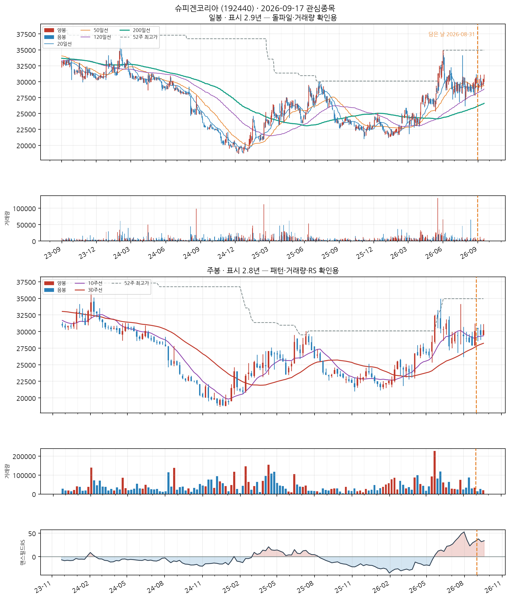
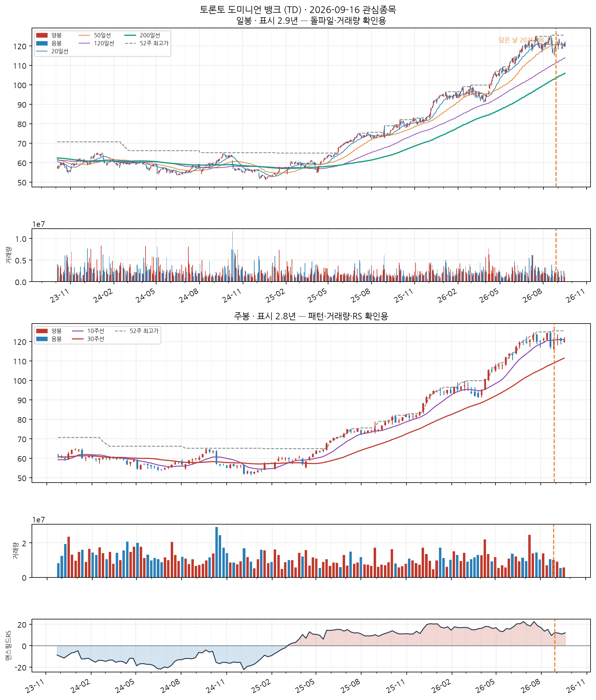
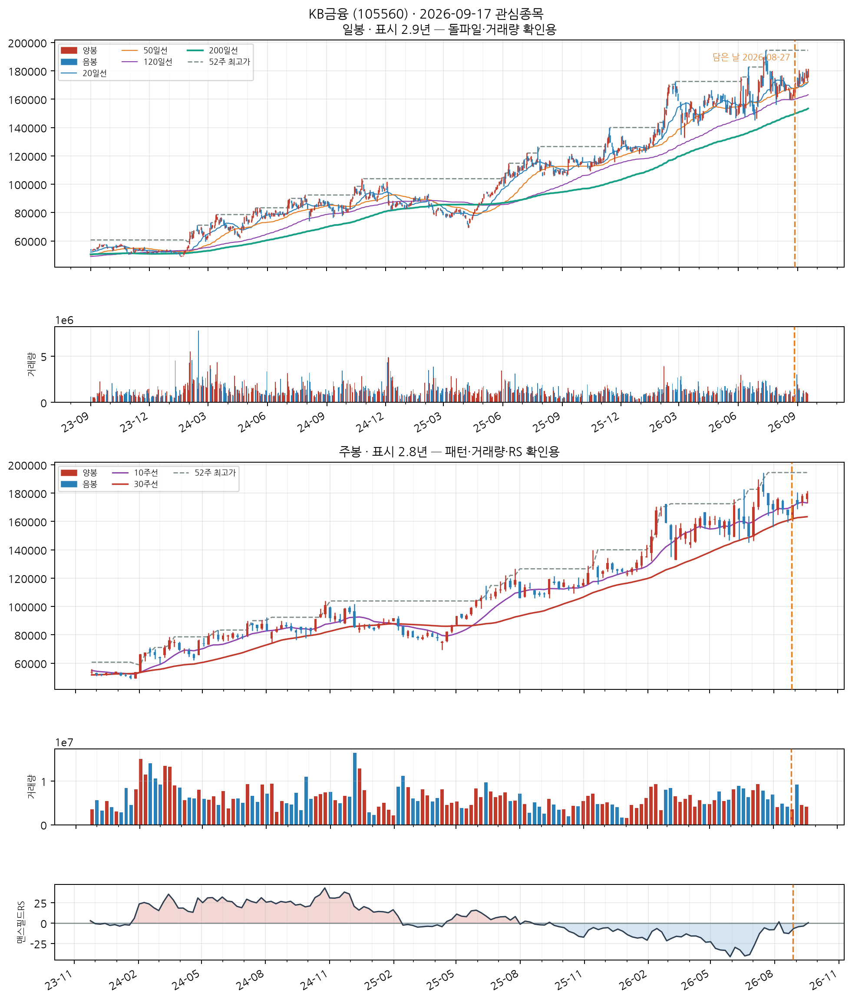
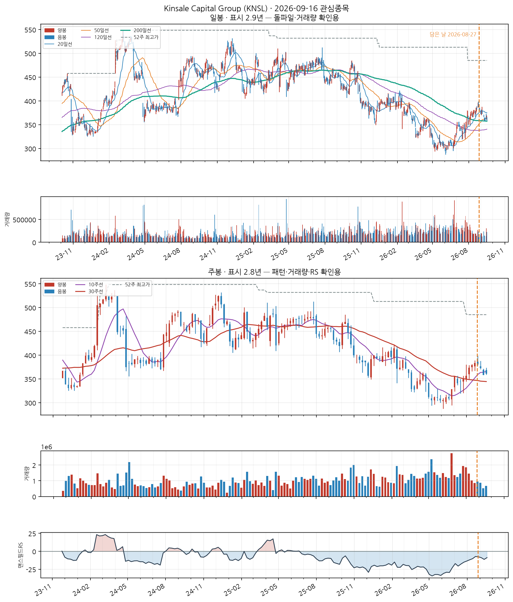

이 전략의 진입 조건
- SMA 정배열 성립 — 20일선 > 50일선 > 120일선 순서가 오늘 성립할 것
- 정배열이 최근에 시작 — 그 정배열이 시작된 지 10거래일 이내일 것 (이미 오래 정배열이던 종목은 제외 — '막 시작한 것'만 잡습니다)
자세히 — 한계와 주의사항
이 두 조건이 게이트 전부입니다. 나머지(거래량·모멘텀)는 순위를 매기는 점수일 뿐 통과 여부를 가르지 않습니다.
점수 = 신선도 + 거래량배수 + 모멘텀
· 신선도: 정배열이 시작된 지 얼마나 됐는지 (오늘 막 시작 = 1.0)
· 거래량배수: 오늘 거래량 ÷ 최근 평균 거래량 (최대 3배)
· 모멘텀: 정배열 시작일 종가 대비 오늘 종가 상승률 ÷ 10 (하락 중이면 0)
52주 신고가 스캐너와 목적이 반대입니다 — 그쪽은 이미 오래 오른 리더주를 계속 잡고, 이쪽은 이제 막 추세가 만들어진 종목만 잡습니다.
백테스트 파라미터(손절 −8%, 익절 +24% 등)는 52주 신고가 스캐너에서 그대로 가져온 값이고 Launch Pad 자체 데이터로 재튜닝한 적이 없습니다.
Chord Energy (CHRD)
NASDAQ
Energy
업종 참고: RS 평균 43/99(업종 중 상위 54%) · 오늘 신호 0건 · 업종 평균이 나스닥종합 대비 -13.4%p(126일), 종목별 편차 ±23%p
🧪 자체 섹터 분류(실험적, 참고용): Energy (Permian Resources·APA Corporation 등 18종목)
섹터 내 RS 순위: 3/18위 (RS 54/99)
섹터 1~3위: Permian Resources(60), APA Corporation(58), Chord Energy(54)
※ 자체 상관관계 계산(최근 1년) — 검증 시 기준업종 11개 중 8개 정확. 주 단위로 구성종목이 일부 바뀔 수 있음(주간 일치도 실측 0.53)
종가 $147.03
Launch Pad 스캐너 · 신호 2026-09-11 $152.01→2026-09-16 $147.03−$4.98 (−3.28%)
⚠ 최근 시세 2026-09-16 기준(지연)담은 스캐너: Launch Pad 스캐너담은 날짜: 2026-09-13담은 이유: 진입 시점 대기

📐 차트 패턴 판정: 이중바닥 실패 확신 낮음 판정 기준(PDF)
중간 고점 148.39를 넘었다가 종가가 다시 그 아래로 내려왔다(돌파 실패).
가장 강한 반증 선행 추세: 선행 추세가 상승(+39.1%) — 상승 중 눌림일 수 있어 반전형 전제가 없다
경쟁 후보·더 단순한 설명 더 단순한 설명: 선행 하락이 없어 반전형이 아니라 상승 추세 중 눌림(조정)일 수 있다
측정표 (주봉 종가 기준, 판정일 2026-09-17 이후 데이터 미사용)
조건별 판정
- 미충족 선행 추세 — 선행 추세가 상승(+39.1%) — 상승 중 눌림일 수 있어 반전형 전제가 없다
- 부분충족 두 저점 일치 — 저점 차이 8.3% — 6% 초과
- 부분충족 중간 반등 — 중간 반등 30.9% — 30%를 넘어 W가 아니라 독립된 두 파동일 수 있음
- 충족 기간 — 베이스 25주 ≥ 7주
- 충족 깊이 — 베이스 깊이 22.0% ≤ 40%
- 충족 저점2 매도 약화 — 저점2 부근 거래량 = 저점1 부근의 0.92배
- 충족 최근성 — 돌파 주(2026-09-11)가 1주 전
- 충족 넥라인 돌파 — 2026-09-11 주 종가 152.01 > 확인선 — 돌파 후 1주 경과
- 미충족 돌파 유지 — 돌파 뒤 종가가 확인선 아래로 되돌아옴(현재 -0.9%)
- 미충족 돌파 거래량 — 돌파 주 거래량 = 직전 10주 평균의 0.75배 (기준 1.4배)
추가로 필요한 데이터 장중 고저 기준 깊이(여기 수치는 주봉 종가 기준)
패턴만으로 매수 추천이나 목표 달성 확률을 만들지 않습니다. 수치 기준은 잠정치이며 라벨 데이터로 검증되지 않았습니다.
CC — 분기 실적 성장 우수
2026 분기(10-Q) · 순이익 흑자전환($-390M→$+525M) · EPS 흑자전환($-6.8→$+9.3) · 매출 +84.0%
SEC EDGAR(10-Q/10-K) 기준 · 분기 단독 전년동기 대비 · 직전 분기보다 성장률이 높아짐(가속)
AA — 연간 실적 성장 미흡
2025 연간(10-K) · 순이익 -94.8% · EPS -95.4% · 매출 -7.1%
SEC EDGAR(10-Q/10-K) 기준 · 연간 전년동기 대비 · 최근 3년 연속 증가는 아님 — 오닐 A 기준 미충족으로 한 단계 낮춤
NN — 신고가·모멘텀 데이터 없음
신고가 데이터 없음
SS — 수급(거래량) 데이터 없음
거래량 데이터 없음
LL — 주도주(상대강도) 보통
RS 등급 54/99 (126거래일 ≈ 6개월 기준 · 유니버스 953종목 중 백분위) · 지수대비 -12.0%p
상위 시가총액 유니버스 기준 — KRX 전체 대비 백분위 아님 · 오닐의 RS Rating은 52주 기준이지만 여기는 126거래일로, 같은 리포트의 6개월 모멘텀과 기간을 맞춘 값이다(원전과 다름)
II — 기관·외국인 수급 데이터 없음
미국 종목은 기관 수급 데이터 소스 없음 (SEC Form 13F는 최대 45일 지연되는 분기 스냅샷이라 부적합)
MM — 시장방향 미흡
IXIC 지수가 60일선 아래
**오닐의 M(분산일·추종일 계수)이 아니라 지수의 이동평균 상회 여부**를 쓴 대용값이다 · 실제 매매 필터로는 미적용(표시 전용) — 종목 선별보다 지수 자체 타이밍이 더 효율적이라는 자체 검증 결과 있음 (reports/vs_kospi.md)
nVent Electric plc (NVT)
NASDAQ
Industrials
업종 참고: RS 평균 41/99(업종 중 상위 64%) · 오늘 신호 0건 · 업종 평균이 나스닥종합 대비 -18.3%p(126일), 종목별 편차 ±17%p
🧪 자체 섹터 분류(실험적, 참고용): Industrials (WESCO International·nVent Electric plc 등 9종목)
섹터 내 RS 순위: 2/9위 (RS 72/99)
섹터 1~3위: WESCO International(77), nVent Electric plc(72), 캐터필러(57)
※ 자체 상관관계 계산(최근 1년) — 검증 시 기준업종 11개 중 8개 정확. 주 단위로 구성종목이 일부 바뀔 수 있음(주간 일치도 실측 0.53)
종가 $147.65
Launch Pad 스캐너 · 신호 2026-08-27 $155.55→2026-09-16 $147.65−$7.90 (−5.08%)
⚠ 최근 시세 2026-09-16 기준(지연)담은 스캐너: Launch Pad 스캐너담은 날짜: 2026-09-10담은 이유: 거래량 동반 상승

📐 차트 패턴 판정: 이중바닥 형성 중 확신 낮음 판정 기준(PDF)
두 저점은 있으나 두 번째 저점(147.65) 부근에 머물러 W의 오른쪽 다리가 아직 없다.
가장 강한 반증 선행 추세: 선행 추세가 상승(+74.3%) — 상승 중 눌림일 수 있어 반전형 전제가 없다
경쟁 후보·더 단순한 설명 더 단순한 설명: 선행 하락이 없어 반전형이 아니라 상승 추세 중 눌림(조정)일 수 있다
측정표 (주봉 종가 기준, 판정일 2026-09-17 이후 데이터 미사용)
조건별 판정
- 미충족 선행 추세 — 선행 추세가 상승(+74.3%) — 상승 중 눌림일 수 있어 반전형 전제가 없다
- 충족 두 저점 일치 — 저점 차이 2.7% ≤ 6% · 두 번째 저점이 첫 저점을 언더컷(IBD 선호)
- 충족 중간 반등 — 중간 반등 16.1% ≥ 8%
- 충족 기간 — 베이스 13주 ≥ 7주
- 충족 깊이 — 베이스 깊이 16.6% ≤ 40%
- 충족 저점2 매도 약화 — 저점2 부근 거래량 = 저점1 부근의 0.64배
- 충족 최근성 — 마지막 구조 피벗(2026-09-18)이 0주 전
- 미충족 넥라인 돌파 — 종가가 아직 확인선 위로 안 올라옴(-13.9%)
- 판정불가 돌파 거래량 — 돌파 전
추가로 필요한 데이터 장중 고저 기준 깊이(여기 수치는 주봉 종가 기준)
패턴만으로 매수 추천이나 목표 달성 확률을 만들지 않습니다. 수치 기준은 잠정치이며 라벨 데이터로 검증되지 않았습니다.
CC — 분기 실적 성장 우수
2026 분기(10-Q) · 순이익 +97.2% · EPS +97.0% · 매출 +52.8%
SEC EDGAR(10-Q/10-K) 기준 · 분기 단독 전년동기 대비 · 직전 분기보다 성장률이 높아짐(가속)
AA — 연간 실적 성장 양호
2025 연간(10-K) · 순이익 +114.0% · EPS +118.8% · 매출 +29.5%
SEC EDGAR(10-Q/10-K) 기준 · 연간 전년동기 대비 · 최근 3년 연속 증가는 아님 — 오닐 A 기준 미충족으로 한 단계 낮춤
NN — 신고가·모멘텀 데이터 없음
신고가 데이터 없음
SS — 수급(거래량) 데이터 없음
거래량 데이터 없음
LL — 주도주(상대강도) 양호
RS 등급 72/99 (126거래일 ≈ 6개월 기준 · 유니버스 953종목 중 백분위) · 지수대비 -1.8%p
상위 시가총액 유니버스 기준 — KRX 전체 대비 백분위 아님 · 오닐의 RS Rating은 52주 기준이지만 여기는 126거래일로, 같은 리포트의 6개월 모멘텀과 기간을 맞춘 값이다(원전과 다름)
II — 기관·외국인 수급 데이터 없음
미국 종목은 기관 수급 데이터 소스 없음 (SEC Form 13F는 최대 45일 지연되는 분기 스냅샷이라 부적합)
MM — 시장방향 미흡
IXIC 지수가 60일선 아래
**오닐의 M(분산일·추종일 계수)이 아니라 지수의 이동평균 상회 여부**를 쓴 대용값이다 · 실제 매매 필터로는 미적용(표시 전용) — 종목 선별보다 지수 자체 타이밍이 더 효율적이라는 자체 검증 결과 있음 (reports/vs_kospi.md)
소프트웨어 개발 및 공급업
업종 참고: RS 평균 47/99(업종 중 상위 63%) · 오늘 신호 3건 · 업종 평균이 코스닥 대비 +18.3%p(126일), 종목별 편차 ±43%p
🧪 자체 섹터 분류(실험적, 참고용): 소프트웨어 개발 및 공급업 (컴투스·시프트업 등 13종목)
섹터 내 RS 순위: 1/13위 (RS 78/99)
섹터 1~3위: 컴투스(78), 시프트업(77), 넥슨게임즈(76)
※ 자체 상관관계 계산(최근 1년) — 검증 시 기준업종 11개 중 8개 정확. 주 단위로 구성종목이 일부 바뀔 수 있음(주간 일치도 실측 0.53)
종가 33,650
Launch Pad 스캐너 · 신호 2026-09-10 34,850원→2026-09-17 33,650원−1,200원 (−3.44%)
담은 스캐너: Launch Pad 스캐너담은 날짜: 2026-09-10담은 이유: 거래량 동반 상승

📐 차트 패턴 판정: 컵위드핸들 형태 완성·미돌파 확신 낮음 판정 기준(PDF)
컵(30주·깊이 38.5%)+핸들 형태는 있으나 피벗 36,000를 아직 넘지 못했다.
가장 강한 반증 선행 추세: 선행 추세가 하락(-2.6%) — 지속형 컵의 전제가 없다(라운딩 바텀 가능)
경쟁 후보·더 단순한 설명 역헤드앤숄더(형성 중·확신 낮음) / 더 단순한 설명: 선행 상승이 없어 컵이 아니라 하락 뒤 라운딩 바텀일 수 있다
측정표 (주봉 종가 기준, 판정일 2026-09-17 이후 데이터 미사용)
조건별 판정
- 미충족 선행 추세 — 선행 추세가 하락(-2.6%) — 지속형 컵의 전제가 없다(라운딩 바텀 가능)
- 충족 기간 — 컵 30주 (기준 7~65주)
- 부분충족 깊이 — 컵 깊이 38.5% — 기준 12%~33% 밖(고변동 종목이라 50%까지 예외 허용)
- 충족 림 대칭 — 좌우 림 차이 2.4% ≤ 12%
- 충족 U자 모양 — 저점이 컵 구간의 70% 지점(중앙 부근)
- 미충족 베이스 거래량 수축 — 컵 구간 평균 = 직전 30주 평균의 1.74배
- 충족 핸들 — 핸들 1주·깊이 10.0% (기준 ≤15%, 컵 깊이의 절반 이하)
- 부분충족 핸들 거래량 수축 — 핸들 평균 = 컵 구간 평균의 4.28배
- 충족 최근성 — 마지막 구조 피벗(2026-09-04)이 2주 전
- 미충족 피벗 돌파 — 종가가 아직 확인선 위로 안 올라옴(-6.5%)
- 판정불가 돌파 거래량 — 돌파 전
추가로 필요한 데이터 장중 고저 기준 깊이(여기 수치는 주봉 종가 기준)
패턴만으로 매수 추천이나 목표 달성 확률을 만들지 않습니다. 수치 기준은 잠정치이며 라벨 데이터로 검증되지 않았습니다.
CC — 분기 실적 성장 미흡
2026 반기보고서(누적) · 순이익 적자확대(+nan억원→-35억원) · EPS 흑자전환(+nan원→+214원) · 매출 흑자전환(+nan억원→+1,570억원)
DART 공시 기준 · 분기 단독 전년동기 대비 · 직전 분기보다 성장률이 높아짐(가속) · 순이익은 연결 총계(비지배지분 포함), EPS는 지배주주 기준이라 둘의 증감 방향이 다를 수 있음
AA — 연간 실적 성장 보통
2025 사업보고서(연간) · 순이익 흑자전환(-1,520억원→+94억원) · EPS 흑자전환(-9,438원→+3,192원) · 매출 +0.4%
DART 공시 기준 · 연간 전년동기 대비 · 최근 3년 연속 증가는 아님 — 오닐 A 기준 미충족으로 한 단계 낮춤
NN — 신고가·모멘텀 데이터 없음
신고가 데이터 없음
SS — 수급(거래량) 데이터 없음
거래량 데이터 없음
LL — 주도주(상대강도) 양호
RS 등급 78/99 (126거래일 ≈ 6개월 기준 · 유니버스 1000종목 중 백분위) · 지수대비 +33.0%p
상위 시가총액 유니버스 기준 — KRX 전체 대비 백분위 아님 · 오닐의 RS Rating은 52주 기준이지만 여기는 126거래일로, 같은 리포트의 6개월 모멘텀과 기간을 맞춘 값이다(원전과 다름)
II — 기관·외국인 수급 우수
20일 순매수 +5.53% (거래대금 대비) · 최근절반 +15.26% vs 이전절반 +1.57% (개선) · 순매수 13일 · 누적 +80.5억원
**오닐의 I(기관 보유 종목 수의 증가)가 아니라 단기 순매수 흐름**을 쓴 대용값이다 — 보유 기관 수는 국내에 공개 데이터가 없다 · 한국투자증권 공식 API(KIS) 기준 · 기관+외국인 합산, 기타법인 제외로 거래대금은 소폭 과소추정 · 임계값은 아직 실측 검증 전 잠정치 — 수급 이력이 쌓이면 다른 지표와 같은 방식으로 구분력을 측정해 조정 예정
MM — 시장방향 양호
KOSDAQ 지수가 20일선 위
**오닐의 M(분산일·추종일 계수)이 아니라 지수의 이동평균 상회 여부**를 쓴 대용값이다 · 실제 매매 필터로는 미적용(표시 전용) — 종목 선별보다 지수 자체 타이밍이 더 효율적이라는 자체 검증 결과 있음 (reports/vs_kospi.md)
Financials
업종 참고: RS 평균 64/99(업종 중 상위 1%) · 오늘 신호 0건 · 업종 평균이 나스닥종합 대비 -3.6%p(126일), 종목별 편차 ±14%p
🧪 자체 섹터 분류(실험적, 참고용): Financials (Roku, Inc.·로빈훗 마케츠 등 10종목)
섹터 내 RS 순위: 2/10위 (RS 93/99)
섹터 1~3위: Roku, Inc.(95), 로빈훗 마케츠(93), BrightSpring Health Services(87)
※ 자체 상관관계 계산(최근 1년) — 검증 시 기준업종 11개 중 8개 정확. 주 단위로 구성종목이 일부 바뀔 수 있음(주간 일치도 실측 0.53)
종가 $104.42
Launch Pad 스캐너 · 신호 2026-09-04 $122.11→2026-09-16 $104.42−$17.69 (−14.49%)
⚠ 최근 시세 2026-09-16 기준(지연)담은 스캐너: Launch Pad 스캐너담은 날짜: 2026-09-05

📐 차트 패턴 판정: 역헤드앤숄더 실패 확신 낮음 판정 기준(PDF)
넥라인을 넘었다가 종가가 다시 넥라인(105.68) 아래로 내려왔다(돌파 실패).
가장 강한 반증 선행 추세: 선행 추세가 상승(+69.9%) — 상승 중 눌림일 수 있어 반전형 전제가 없다
경쟁 후보·더 단순한 설명 더 단순한 설명: 선행 하락이 없어 반전형이 아니라 상승 추세 중 눌림(조정)일 수 있다
측정표 (주봉 종가 기준, 판정일 2026-09-17 이후 데이터 미사용)
조건별 판정
- 미충족 선행 추세 — 선행 추세가 상승(+69.9%) — 상승 중 눌림일 수 있어 반전형 전제가 없다
- 충족 머리 깊이 — 양 어깨 대비 최소 23.7% ≥ 3.5%
- 부분충족 어깨 대칭 — 어깨 높이차 19.3% — 15% 초과
- 충족 기간 — 어깨 간 36주 ≥ 6주
- 충족 시간 대칭 — 머리 좌우 기간 비 1.00
- 충족 넥라인 기울기 — 주당 -0.5%
- 충족 오른쪽 어깨 매도 약화 — 오른쪽 어깨 부근 거래량 = 머리 부근의 0.79배
- 충족 최근성 — 돌파 주(2026-09-04)가 2주 전
- 충족 넥라인 돌파 — 2026-09-04 주 종가 122.11 > 확인선 — 돌파 후 2주 경과
- 미충족 돌파 유지 — 돌파 뒤 종가가 확인선 아래로 되돌아옴(현재 -1.2%)
- 부분충족 돌파 거래량 — 돌파 주 거래량 = 직전 10주 평균의 1.22배 (기준 1.4배)
추가로 필요한 데이터 장중 고저 기준 깊이(여기 수치는 주봉 종가 기준)
패턴만으로 매수 추천이나 목표 달성 확률을 만들지 않습니다. 수치 기준은 잠정치이며 라벨 데이터로 검증되지 않았습니다.
CC — 분기 실적 성장 우수
2026 분기(10-Q) · 순이익 +45.3% · EPS +47.6% · 매출 +32.3%
SEC EDGAR(10-Q/10-K) 기준 · 분기 단독 전년동기 대비 · 직전 분기보다 성장률이 높아짐(가속)
AA — 연간 실적 성장 우수
2025 연간(10-K) · 순이익 +33.5% · EPS +31.4% · 매출 +51.6%
SEC EDGAR(10-Q/10-K) 기준 · 연간 전년동기 대비 · 최근 3년 연간 EPS 연속 증가
NN — 신고가·모멘텀 데이터 없음
신고가 데이터 없음
SS — 수급(거래량) 데이터 없음
거래량 데이터 없음
LL — 주도주(상대강도) 우수
RS 등급 93/99 (126거래일 ≈ 6개월 기준 · 유니버스 953종목 중 백분위) · 지수대비 +31.8%p
상위 시가총액 유니버스 기준 — KRX 전체 대비 백분위 아님 · 오닐의 RS Rating은 52주 기준이지만 여기는 126거래일로, 같은 리포트의 6개월 모멘텀과 기간을 맞춘 값이다(원전과 다름)
II — 기관·외국인 수급 데이터 없음
미국 종목은 기관 수급 데이터 소스 없음 (SEC Form 13F는 최대 45일 지연되는 분기 스냅샷이라 부적합)
MM — 시장방향 미흡
IXIC 지수가 60일선 아래
**오닐의 M(분산일·추종일 계수)이 아니라 지수의 이동평균 상회 여부**를 쓴 대용값이다 · 실제 매매 필터로는 미적용(표시 전용) — 종목 선별보다 지수 자체 타이밍이 더 효율적이라는 자체 검증 결과 있음 (reports/vs_kospi.md)
그외 기타 제품 제조업
업종 참고: RS 평균 데이터 부족 · 오늘 신호 0건
🧪 자체 섹터 분류(실험적, 참고용): 코메론·슈피겐코리아 등 8종목 (업종 혼재)
섹터 내 RS 순위: 2/8위 (RS 88/99)
섹터 1~3위: 코메론(89), 슈피겐코리아(88), 대원강업(87)
※ 자체 상관관계 계산(최근 1년) — 검증 시 기준업종 11개 중 8개 정확. 주 단위로 구성종목이 일부 바뀔 수 있음(주간 일치도 실측 0.53)
종가 30,200
Launch Pad 스캐너 · 신호 2026-08-31 29,650원→2026-09-17 30,200원+550원 (+1.85%)
담은 스캐너: Launch Pad 스캐너담은 날짜: 2026-08-31

📐 차트 패턴 판정: 컵위드핸들 형성 중 확신 낮음 판정 기준(PDF)
컵 구조(17주·깊이 14.4%)는 있으나 핸들이 아직 없다 — 형성 중.
가장 강한 반증 베이스 거래량 수축: 컵 구간 평균 = 직전 17주 평균의 1.02배
경쟁 후보·더 단순한 설명 없음
측정표 (주봉 종가 기준, 판정일 2026-09-17 이후 데이터 미사용)
조건별 판정
- 충족 선행 추세 — 선행 상승 +40.9% ≥ +20%
- 충족 기간 — 컵 17주 (기준 7~65주)
- 충족 깊이 — 컵 깊이 14.4% (기준 12%~33%)
- 충족 림 대칭 — 좌우 림 차이 6.8% ≤ 12%
- 충족 U자 모양 — 저점이 컵 구간의 29% 지점(중앙 부근)
- 부분충족 베이스 거래량 수축 — 컵 구간 평균 = 직전 17주 평균의 1.02배
- 판정불가 핸들 — 오른쪽 림 이후 봉이 없어 핸들 미형성
- 충족 최근성 — 마지막 구조 피벗(2026-09-18)이 0주 전
- 미충족 피벗 돌파 — 종가가 아직 확인선 위로 안 올라옴(+0.0%)
- 판정불가 돌파 거래량 — 돌파 전
추가로 필요한 데이터 장중 고저 기준 깊이(여기 수치는 주봉 종가 기준)
패턴만으로 매수 추천이나 목표 달성 확률을 만들지 않습니다. 수치 기준은 잠정치이며 라벨 데이터로 검증되지 않았습니다.
CC — 분기 실적 성장 우수
2026 반기보고서(누적) · 순이익 흑자전환(+nan억원→+152억원) · EPS 흑자전환(+nan원→+2,625원) · 매출 흑자전환(+nan억원→+1,103억원)
DART 공시 기준 · 분기 단독 전년동기 대비 · 직전 분기보다 성장률이 높아짐(가속)
AA — 연간 실적 성장 미흡
2025 사업보고서(연간) · 순이익 적자축소(-11억원→-0.2억원) · EPS +3.3% · 매출 -0.3%
DART 공시 기준 · 연간 전년동기 대비 · 적자폭은 줄었으나 여전히 적자 — 오닐의 이익성장 기준은 미충족 · 최근 3년 연속 증가는 아님 — 오닐 A 기준 미충족으로 한 단계 낮춤 · 순이익은 연결 총계(비지배지분 포함), EPS는 지배주주 기준이라 둘의 증감 방향이 다를 수 있음
NN — 신고가·모멘텀 데이터 없음
신고가 데이터 없음
SS — 수급(거래량) 데이터 없음
거래량 데이터 없음
LL — 주도주(상대강도) 우수
RS 등급 88/99 (126거래일 ≈ 6개월 기준 · 유니버스 1000종목 중 백분위) · 지수대비 +53.9%p
상위 시가총액 유니버스 기준 — KRX 전체 대비 백분위 아님 · 오닐의 RS Rating은 52주 기준이지만 여기는 126거래일로, 같은 리포트의 6개월 모멘텀과 기간을 맞춘 값이다(원전과 다름)
II — 기관·외국인 수급 미흡
20일 순매수 -0.97% (거래대금 대비) · 최근절반 -1.96% vs 이전절반 +0.00% (약화) · 순매수 11일 · 누적 -0.3억원
**오닐의 I(기관 보유 종목 수의 증가)가 아니라 단기 순매수 흐름**을 쓴 대용값이다 — 보유 기관 수는 국내에 공개 데이터가 없다 · 한국투자증권 공식 API(KIS) 기준 · 기관+외국인 합산, 기타법인 제외로 거래대금은 소폭 과소추정 · 임계값은 아직 실측 검증 전 잠정치 — 수급 이력이 쌓이면 다른 지표와 같은 방식으로 구분력을 측정해 조정 예정
MM — 시장방향 양호
KOSDAQ 지수가 20일선 위
**오닐의 M(분산일·추종일 계수)이 아니라 지수의 이동평균 상회 여부**를 쓴 대용값이다 · 실제 매매 필터로는 미적용(표시 전용) — 종목 선별보다 지수 자체 타이밍이 더 효율적이라는 자체 검증 결과 있음 (reports/vs_kospi.md)
Financials
업종 참고: RS 평균 64/99(업종 중 상위 1%) · 오늘 신호 0건 · 업종 평균이 나스닥종합 대비 -3.6%p(126일), 종목별 편차 ±14%p
🧪 자체 섹터 분류(실험적, 참고용): Industrials (Nucor·Steel Dynamics 등 28종목)
섹터 내 RS 순위: 13/28위 (RS 82/99)
섹터 1~3위: Nucor(94), Steel Dynamics(90), 미즈호 파이낸셜 그룹(ADR)(89)
※ 자체 상관관계 계산(최근 1년) — 검증 시 기준업종 11개 중 8개 정확. 주 단위로 구성종목이 일부 바뀔 수 있음(주간 일치도 실측 0.53)
종가 $120.60
Launch Pad 스캐너 · 신호 2026-08-27 $121.09→2026-09-16 $120.60−$0.49 (−0.40%)
⚠ 최근 시세 2026-09-16 기준(지연)담은 스캐너: Launch Pad 스캐너담은 날짜: 2026-08-28

📐 차트 패턴 판정: 후보 없음 후보 없음 판정 기준(PDF)
세 패턴 모두 필수 조건을 채운 후보가 없다(가장 가까운 컵위드핸들 후보: 기간: 컵 147주 — 기준 7~65주를 크게 벗어남).
가장 강한 반증 컵위드핸들: 기간: 컵 147주 — 기준 7~65주를 크게 벗어남
경쟁 후보·더 단순한 설명 더 단순한 설명: 최근 26주 상승 추세 지속(+31.1%) — 베이스 없음
추가로 필요한 데이터 장중 고저 기준 깊이(여기 수치는 주봉 종가 기준)
패턴만으로 매수 추천이나 목표 달성 확률을 만들지 않습니다. 수치 기준은 잠정치이며 라벨 데이터로 검증되지 않았습니다.
CC — 분기 실적 성장 데이터 없음
데이터 없음 — SEC EDGAR 조회 실패 또는 XBRL 미제출
AA — 연간 실적 성장 데이터 없음
데이터 없음 — SEC EDGAR 조회 실패 또는 10-K 미제출
NN — 신고가·모멘텀 데이터 없음
신고가 데이터 없음
SS — 수급(거래량) 데이터 없음
거래량 데이터 없음
LL — 주도주(상대강도) 우수
RS 등급 82/99 (126거래일 ≈ 6개월 기준 · 유니버스 953종목 중 백분위) · 지수대비 +9.6%p
상위 시가총액 유니버스 기준 — KRX 전체 대비 백분위 아님 · 오닐의 RS Rating은 52주 기준이지만 여기는 126거래일로, 같은 리포트의 6개월 모멘텀과 기간을 맞춘 값이다(원전과 다름)
II — 기관·외국인 수급 데이터 없음
미국 종목은 기관 수급 데이터 소스 없음 (SEC Form 13F는 최대 45일 지연되는 분기 스냅샷이라 부적합)
MM — 시장방향 미흡
IXIC 지수가 60일선 아래
**오닐의 M(분산일·추종일 계수)이 아니라 지수의 이동평균 상회 여부**를 쓴 대용값이다 · 실제 매매 필터로는 미적용(표시 전용) — 종목 선별보다 지수 자체 타이밍이 더 효율적이라는 자체 검증 결과 있음 (reports/vs_kospi.md)
기타 금융업
업종 참고: RS 평균 59/99(업종 중 상위 19%) · 오늘 신호 8건 · 업종 평균이 코스피 대비 -23.8%p(126일), 종목별 편차 ±26%p
🧪 자체 섹터 분류(실험적, 참고용): 기타 금융업 (현대해상·삼성화재 등 22종목)
섹터 내 RS 순위: 7/22위 (RS 86/99)
섹터 1~3위: 현대해상(94), 삼성화재(91), 하나금융지주(89)
※ 자체 상관관계 계산(최근 1년) — 검증 시 기준업종 11개 중 8개 정확. 주 단위로 구성종목이 일부 바뀔 수 있음(주간 일치도 실측 0.53)
종가 179,700
Launch Pad 스캐너 · 신호 2026-08-27 168,100원→2026-09-17 179,700원+11,600원 (+6.90%)
담은 스캐너: Launch Pad 스캐너담은 날짜: 2026-08-27

📐 차트 패턴 판정: 후보 없음 후보 없음 판정 기준(PDF)
세 패턴 모두 필수 조건을 채운 후보가 없다(가장 가까운 컵위드핸들 후보: 핸들: 핸들 저점 149,300가 컵 중간값 158,550 아래 — 핸들이 아니라 컵 재하락).
가장 강한 반증 컵위드핸들: 핸들: 핸들 저점 149,300가 컵 중간값 158,550 아래 — 핸들이 아니라 컵 재하락; 이중바닥: 최근성: 돌파가 10주 전(2026-07-10) — 기준 8주 이내, 이미 지난 베이스(확인선 대비 +4.7%)
경쟁 후보·더 단순한 설명 더 단순한 설명: 최근 26주 상승 추세 지속(+15.8%) — 베이스 없음
추가로 필요한 데이터 장중 고저 기준 깊이(여기 수치는 주봉 종가 기준)
패턴만으로 매수 추천이나 목표 달성 확률을 만들지 않습니다. 수치 기준은 잠정치이며 라벨 데이터로 검증되지 않았습니다.
CC — 분기 실적 성장 우수
2026 반기보고서(누적) · 순이익 흑자전환(+nan억원→+20,105억원) · EPS 흑자전환(+nan원→+5,549원)
DART 공시 기준 · 분기 단독 전년동기 대비 · 직전 분기보다 성장률이 높아짐(가속)
AA — 연간 실적 성장 양호
2025 사업보고서(연간) · 순이익 +16.1% · EPS +19.6%
DART 공시 기준 · 연간 전년동기 대비 · 최근 3년 연간 EPS 연속 증가
NN — 신고가·모멘텀 데이터 없음
신고가 데이터 없음
SS — 수급(거래량) 데이터 없음
거래량 데이터 없음
LL — 주도주(상대강도) 우수
RS 등급 86/99 (126거래일 ≈ 6개월 기준 · 유니버스 1000종목 중 백분위) · 지수대비 +1.3%p
상위 시가총액 유니버스 기준 — KRX 전체 대비 백분위 아님 · 오닐의 RS Rating은 52주 기준이지만 여기는 126거래일로, 같은 리포트의 6개월 모멘텀과 기간을 맞춘 값이다(원전과 다름)
II — 기관·외국인 수급 양호
20일 순매수 +3.36% (거래대금 대비) · 최근절반 +1.44% vs 이전절반 +4.95% (약화) · 순매수 15일 · 누적 +1,322.6억원
**오닐의 I(기관 보유 종목 수의 증가)가 아니라 단기 순매수 흐름**을 쓴 대용값이다 — 보유 기관 수는 국내에 공개 데이터가 없다 · 한국투자증권 공식 API(KIS) 기준 · 기관+외국인 합산, 기타법인 제외로 거래대금은 소폭 과소추정 · 임계값은 아직 실측 검증 전 잠정치 — 수급 이력이 쌓이면 다른 지표와 같은 방식으로 구분력을 측정해 조정 예정 · 최근 유입이 이전보다 약해져 한 단계 낮춤
MM — 시장방향 미흡
KOSPI 지수가 60일선 아래
**오닐의 M(분산일·추종일 계수)이 아니라 지수의 이동평균 상회 여부**를 쓴 대용값이다 · 실제 매매 필터로는 미적용(표시 전용) — 종목 선별보다 지수 자체 타이밍이 더 효율적이라는 자체 검증 결과 있음 (reports/vs_kospi.md)
Kinsale Capital Group (KNSL)
NASDAQ
Financials
업종 참고: RS 평균 64/99(업종 중 상위 1%) · 오늘 신호 0건 · 업종 평균이 나스닥종합 대비 -3.6%p(126일), 종목별 편차 ±14%p
🧪 자체 섹터 분류(실험적, 참고용): Financials (Ryan Specialty·Arthur J. Gallagher & Co. 등 8종목)
섹터 내 RS 순위: 3/8위 (RS 60/99)
섹터 1~3위: Ryan Specialty(70), Arthur J. Gallagher & Co.(67), Kinsale Capital Group(60)
※ 자체 상관관계 계산(최근 1년) — 검증 시 기준업종 11개 중 8개 정확. 주 단위로 구성종목이 일부 바뀔 수 있음(주간 일치도 실측 0.53)
종가 $360.75
Launch Pad 스캐너 · 신호 2026-08-26 $387.95→2026-09-16 $360.75−$27.20 (−7.01%)
⚠ 최근 시세 2026-09-16 기준(지연)담은 스캐너: Launch Pad 스캐너담은 날짜: 2026-08-27

📐 차트 패턴 판정: 컵위드핸들 형성 중 확신 낮음 판정 기준(PDF)
컵 구조(22주·깊이 15.5%)는 있으나 핸들이 아직 없다 — 형성 중.
가장 강한 반증 선행 추세: 선행 추세가 하락(-19.4%) — 지속형 컵의 전제가 없다(라운딩 바텀 가능)
경쟁 후보·더 단순한 설명 이중바닥(실패·확신 낮음) / 더 단순한 설명: 선행 상승이 없어 컵이 아니라 하락 뒤 라운딩 바텀일 수 있다
측정표 (주봉 종가 기준, 판정일 2026-09-17 이후 데이터 미사용)
조건별 판정
- 미충족 선행 추세 — 선행 추세가 하락(-19.4%) — 지속형 컵의 전제가 없다(라운딩 바텀 가능)
- 충족 기간 — 컵 22주 (기준 7~65주)
- 충족 깊이 — 컵 깊이 15.5% (기준 12%~33%)
- 충족 림 대칭 — 좌우 림 차이 0.0% ≤ 12%
- 충족 U자 모양 — 저점이 컵 구간의 27% 지점(중앙 부근)
- 부분충족 베이스 거래량 수축 — 컵 구간 평균 = 직전 22주 평균의 1.19배
- 판정불가 핸들 — 오른쪽 림 이후 봉이 없어 핸들 미형성
- 충족 최근성 — 마지막 구조 피벗(2026-09-18)이 0주 전
- 미충족 피벗 돌파 — 종가가 아직 확인선 위로 안 올라옴(+0.0%)
- 판정불가 돌파 거래량 — 돌파 전
추가로 필요한 데이터 장중 고저 기준 깊이(여기 수치는 주봉 종가 기준)
패턴만으로 매수 추천이나 목표 달성 확률을 만들지 않습니다. 수치 기준은 잠정치이며 라벨 데이터로 검증되지 않았습니다.
CC — 분기 실적 성장 양호
2026 분기(10-Q) · 순이익 +31.1% · EPS +34.0% · 매출 +16.8%
SEC EDGAR(10-Q/10-K) 기준 · 분기 단독 전년동기 대비 · 직전 분기보다 성장률이 높아짐(가속)
AA — 연간 실적 성장 양호
2025 연간(10-K) · 순이익 +21.4% · EPS +21.8% · 매출 +18.0%
SEC EDGAR(10-Q/10-K) 기준 · 연간 전년동기 대비 · 최근 3년 연간 EPS 연속 증가
NN — 신고가·모멘텀 데이터 없음
신고가 데이터 없음
SS — 수급(거래량) 데이터 없음
거래량 데이터 없음
LL — 주도주(상대강도) 보통
RS 등급 60/99 (126거래일 ≈ 6개월 기준 · 유니버스 953종목 중 백분위) · 지수대비 -8.9%p
상위 시가총액 유니버스 기준 — KRX 전체 대비 백분위 아님 · 오닐의 RS Rating은 52주 기준이지만 여기는 126거래일로, 같은 리포트의 6개월 모멘텀과 기간을 맞춘 값이다(원전과 다름)
II — 기관·외국인 수급 데이터 없음
미국 종목은 기관 수급 데이터 소스 없음 (SEC Form 13F는 최대 45일 지연되는 분기 스냅샷이라 부적합)
MM — 시장방향 미흡
IXIC 지수가 60일선 아래
**오닐의 M(분산일·추종일 계수)이 아니라 지수의 이동평균 상회 여부**를 쓴 대용값이다 · 실제 매매 필터로는 미적용(표시 전용) — 종목 선별보다 지수 자체 타이밍이 더 효율적이라는 자체 검증 결과 있음 (reports/vs_kospi.md)